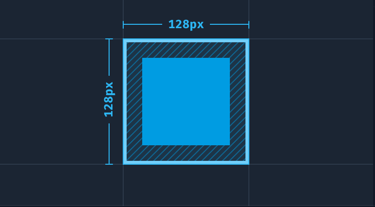
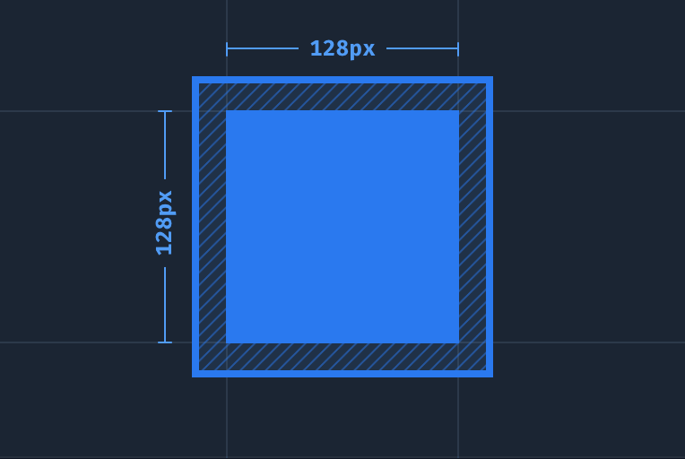

Tailwind CSS レイアウトクラス
Tailwind CSS は豊富なレイアウト関連クラスを提供しており、開発者は非常に柔軟な方法でページのあらゆる側面を制御できます。
次に、重要なレイアウト関連クラスをいくつか詳しく説明します。
1、アスペクト比 (Aspect Ratio)
アスペクト比クラスは、要素のアスペクト比を設定するのに役立ち、レスポンシブデザインで要素が伸びたり縮んだりするのを防ぎます。
主なクラス：
| クラス名 | CSSプロパティと値 | 説明 |
|---|---|---|
aspect-auto | aspect-ratio: auto; | このクラスは、要素を自然なアスペクト比に保ち、強制的な調整を行いません。要素を特定のアスペクト比に強制的に合わせたり縮めたりするのではなく、コンテンツに応じて自動的にサイズを調整したい場合に適しています。 |
aspect-square | aspect-ratio: 1 / 1; | このクラスは、要素のアスペクト比を1:1（幅と高さが等しい）に強制します。正方形や円形の要素を作成するためによく使用されます。 |
aspect-video | aspect-ratio: 16 / 9; | このクラスは、要素のアスペクト比を16:9に強制します。これは一般的なビデオのアスペクト比であり、ビデオを表示したり、ビデオプレーヤーを模した要素に適しています。 |
例
<div class="aspect-ratio">
<img src="video.jpg" alt="Video" class="object-cover">
</div>
試してみる »
2、コンテナ (Container)
コンテナクラスは、コンテナ要素をさまざまな画面サイズにレスポンシブに適応させることができ、コンテンツの最大幅を設定するためによく使用されます。
主なクラス：
container：要素をレスポンシブコンテナにします。mx-auto：コンテナを水平方向に中央揃えにします。
| クラス名 | CSSプロパティと値 | 説明 |
|---|---|---|
container |
width: 100%; |
コンテナの幅はデフォルトで100%で、親要素全体の幅を占めます。 |
sm:container |
max-width: 640px; |
画面幅が640px以上の場合、コンテナの最大幅は640pxになります。 |
md:container |
max-width: 768px; |
画面幅が768px以上の場合、コンテナの最大幅は768pxになります。 |
lg:container |
max-width: 1024px; |
画面幅が1024px以上の場合、コンテナの最大幅は1024pxになります。 |
xl:container |
max-width: 1280px; |
画面幅が1280px以上の場合、コンテナの最大幅は1280pxになります。 |
2xl:container |
max-width: 1536px; |
画面幅が1536px以上の場合、コンテナの最大幅は1536pxになります。 |
これらのクラスを使用すると、レスポンシブな最大幅を持つコンテナを作成できます。これはレイアウトを作成する際に非常に便利で、特に可読性を高めるためにコンテンツの幅を制限したい場合に役立ちます。
例
<!-- コンテンツ -->
</div>
<div class="lg:container mx-auto">
<!-- 大画面では幅が最大1024pxのコンテンツ -->
</div>
これらの例では、最初の<div>は常に幅100%を占め、2番目の<div>は大画面（lg）以上の画面サイズでは、その最大幅は1024pxに制限されます。mx-autoクラスは、コンテナを水平方向に中央揃えするために使用されます。
3、カラムレイアウト (Columns)
Columns クラスは、複数列レイアウトを実装するために使用されます。
列数と列の間隔を制御できます。
主なクラス：
columns-{n}：列数を設定します。space-x-{size}：列間の間隔を設定します。
| クラス名 | CSSプロパティと値 | 説明 |
|---|---|---|
columns-1 | columns: 1; | 要素の列数を1に設定します。 |
columns-2 | columns: 2; | 要素の列数を2に設定します。 |
columns-3 | columns: 3; | 要素の列数を3に設定します。 |
columns-4 | columns: 4; | 要素の列数を4に設定します。 |
columns-5 | columns: 5; | 要素の列数を5に設定します。 |
columns-6 | columns: 6; | 要素の列数を6に設定します。 |
columns-7 | columns: 7; | 要素の列数を7に設定します。 |
columns-8 | columns: 8; | 要素の列数を8に設定します。 |
columns-9 | columns: 9; | 要素の列数を9に設定します。 |
columns-10 | columns: 10; | 要素の列数を10に設定します。 |
columns-11 | columns: 11; | 要素の列数を11に設定します。 |
columns-12 | columns: 12; | 要素の列数を12に設定します。 |
columns-auto | columns: auto; | 要素の列数を自動に設定し、コンテンツに応じて列幅を自動調整します。 |
columns-3xs | columns: 16rem; /* 256px */ | 要素の列幅を16rem（256px）に設定します。 |
columns-2xs | columns: 18rem; /* 288px */ | 要素の列幅を18rem（288px）に設定します。 |
columns-xs | columns: 20rem; /* 320px */ | 要素の列幅を20rem（320px）に設定します。 |
columns-sm | columns: 24rem; /* 384px */ | 要素の列幅を24rem（384px）に設定します。 |
columns-md | columns: 28rem; /* 448px */ | 要素の列幅を28rem（448px）に設定します。 |
columns-lg | columns: 32rem; /* 512px */ | 要素の列幅を32rem（512px）に設定します。 |
columns-xl | columns: 36rem; /* 576px */ | 要素の列幅を36rem（576px）に設定します。 |
columns-2xl | columns: 42rem; /* 672px */ | 要素の列幅を42rem（672px）に設定します。 |
columns-3xl | columns: 48rem; /* 768px */ | 要素の列幅を48rem（768px）に設定します。 |
columns-4xl | columns: 56rem; /* 896px */ | 要素の列幅を56rem（896px）に設定します。 |
columns-5xl | `columns: 64rem; /* |
例
<div class="columns-3 space-x-4">
<p>Column 1</p>
<p>Column 2</p>
<p>Column 3</p>
</div>
試してみる »
4、ページ分割
以下のクラスは、開発者が文書のページ分割と段組みレイアウトをより適切に制御し、印刷出力の可読性と美観を向上させるのに役立ちます。
主なクラス：
break-after-{value}：ページ分割後の動作を制御します。break-before-{value}：ページ分割前の動作を制御します。break-inside-{value}：要素内部のページ分割動作を制御します。
| クラス名 | CSSプロパティと値 | 説明 |
|---|---|---|
break-after-auto | break-after: auto; | 要素の後にコンテンツが自然にページ分割または段組みされることを許可します。 |
break-after-avoid | break-after: avoid; | 要素の後でのページ分割または段組みを可能な限り避けます。 |
break-after-all | break-after: all; | 自然な位置でなくても、要素の後にページ分割または段組みを強制します。 |
break-after-avoid-page | break-after: avoid-page; | 要素の後でのページ分割は可能な限り避けますが、段組みは許可します。 |
break-after-page | break-after: page; | 要素の後にページ分割を強制しますが、段組みは許可しません。 |
break-after-left | break-after: left; | 要素の後にページ分割または段組みを強制し、左側のページを優先します。 |
break-after-right | break-after: right; | 要素の後にページ分割または段組みを強制し、右側のページを優先します。 |
break-after-column | break-after: column; | 要素の後に段組みを強制しますが、ページ分割は許可しません。 |
上記のクラスは、印刷または段組みレイアウトにおけるコンテンツのページ分割または段組み動作を制御するために使用されます：
- break-after-autoブラウザが要素の後にページ分割または段組みを行うかどうかを決定できるようにします。
- break-after-avoidは、ブラウザに要素の後でのページ分割または段組みを可能な限り避けるように指示します。
| クラス名 | CSSプロパティと値 | 説明 |
|---|---|---|
break-before-auto | break-before: auto; | 要素の前にコンテンツが自然にページ分割または段組みされることを許可します。 |
break-before-avoid | break-before: avoid; | 要素の前でのページ分割または段組みを可能な限り避けます。 |
break-before-all | break-before: all; | 自然な位置でなくても、要素の前にページ分割または段組みを強制します。 |
break-before-avoid-page | break-before: avoid-page; | 要素の前でのページ分割は可能な限り避けますが、段組みは許可します。 |
break-before-page | break-before: page; | 要素の前にページ分割を強制しますが、段組みは許可しません。 |
break-before-left | break-before: left; | 要素の前にページ分割または段組みを強制し、左側のページを優先します。 |
break-before-right | break-before: right; | 要素の前にページ分割または段組みを強制し、右側のページを優先します。 |
break-before-column | break-before: column; | 要素の前に段組みを強制しますが、ページ分割は許可しません。 |
上記のクラスは、印刷または段組みレイアウトにおけるコンテンツのページ分割または段組み動作を制御するために使用されます。
- break-before-autoブラウザが要素の前にページ分割または段組みを行うかどうかを決定できるようにします。
- break-before-avoidは、ブラウザに要素の前でのページ分割または段組みを可能な限り避けるように指示します。
| クラス名 | CSSプロパティと値 | 説明 |
|---|---|---|
break-inside-auto | break-inside: auto; | 要素の内部でコンテンツが自然にページ分割または段組みされることを許可します。 |
break-inside-avoid | break-inside: avoid; | 要素の内部でのページ分割または段組みを可能な限り避けます。 |
break-inside-avoid-page | break-inside: avoid-page; | 要素の内部でのページ分割は可能な限り避けますが、段組みは許可します。 |
break-inside-avoid-column | break-inside: avoid-column; | 要素の内部での段組みは可能な限り避けますが、ページ分割は許可します。 |
上記のクラスは、印刷または段組みレイアウトにおいて、要素の内部でページ分割または段組みを許可するかどうかを制御するために使用されます。
- break-inside-autoブラウザが要素の内部でページ分割または段組みを行うかどうかを決定できるようにします。
- break-inside-avoidは、ブラウザに要素の内部でのページ分割または段組みを可能な限り避けるように指示します。
例
<p>さて、いくつかお伝えしましょう、...</p>
<p class="break-after-column">もちろん、私たちのコンテンツを続けましょう...</p>
<p>たぶん、私たちは...できるでしょう。</p>
<p>もしあなたはこれは...と思うなら</p>
</div>
この例では、<div>要素は2列レイアウト（columns-2）に設定されており、4つの<p>段落が含まれています。2番目の<p>段落にはbreak-after-columnクラス。これにより、その段落の後に段組み（カラム）を強制しますが、改ページは許可されません。つまり、コンテンツが十分に多い場合、2番目の段落の後ろのコンテンツは、同じ列の次の行に続けるのではなく、新しい列から始まります。他の段落には特別な段組みの指示がないため、コンテンツに応じて自然に流れます。
5、テキストの改行
以下は、Tailwind CSS において、要素の断片が複数行・複数列・複数ページでどのようにレンダリングされるかを制御するためのユーティリティクラスと、対応する CSS プロパティです。
| クラス名 | CSSプロパティと値 | 説明 |
|---|---|---|
box-decoration-clone | box-decoration-break: clone; | ボックスが複数のボックスに分割される場合（例: 列やページの境界）、各ボックスが元のボックスの装飾（枠線、背景など）をクローンすることを指定します。 |
box-decoration-slice | box-decoration-break: slice; | ボックスが複数のボックスに分割される場合、各ボックスが元のボックスの装飾を「切断」し、装飾が各ボックスで連続して表示されるようにすることを指定します。 |
上記のクラスは、複数列レイアウトや改ページ時における要素の装飾（枠線や背景など）の表示を制御するために使用されます。
- box-decoration-clone各ボックスの断片に完全な装飾を表示させます。
- box-decoration-sliceボックスが分割される箇所で装飾を「切断」し、視覚的に連続した装飾を保ちます。
これらのユーティリティクラスは、開発者が複雑なレイアウトにおける要素の視覚効果をより適切に制御するのに役立ちます。
例
Hello<br />
World
</span>
<span class="box-decoration-clone bg-gradient-to-r from-indigo-600 to-pink-500 text-white px-2 ...">
Hello<br />
World
</span>
試してみる »
6、ボックスサイズ
Tailwind CSS は、要素のボックスモデル（box-sizing）を制御するための2つのユーティリティクラスを提供しています。
box-border：パディングとボーダーを含めて要素の全体のサイズを計算します。box-content：パディングとボーダーを含めずに要素のサイズを計算します。
1、box-border
CSSプロパティ:
box-sizing: border-box;
box-border ユーティリティクラスを使用して、要素の box-sizing プロパティを border-box に設定します。つまり、要素に高さや幅を指定すると、ブラウザは要素のボーダーとパディングを含めて計算します。
要素のサイズが 100px × 100px で、2px のボーダーと 4px のパディングがある場合、要素の合計レンダリングサイズは 112px × 112px になります。

例
<!-- ... -->
</div>
2、box-content
CSSプロパティ:
box-sizing: content-box;
box-content ユーティリティクラスを使用して、要素の box-sizing プロパティを content-box に設定します。つまり、ブラウザは要素に指定された幅または高さに加えて、ボーダーとパディングを追加します。
要素のサイズが 100px × 100px で、2px のボーダーと 4px のパディングがある場合、要素の実際のレンダリングサイズは 112px × 112px となり、内部のコンテンツ領域は 100px × 100px になります。

display プロパティ
display プロパティは、要素の表示タイプを制御し、要素がページ上でどのように表示されるかを決定します。
| Tailwind クラス名 | CSSプロパティと値 | 説明 |
|---|---|---|
block | display: block; | 要素をブロックレベル要素として表示します。これは1行を占有します。 |
inline-block | display: inline-block; | 要素をインラインブロック要素として表示します。行内に表示され、独自の幅と高さを持ちます。 |
inline | display: inline; | 要素をインライン要素として表示します。他のインライン要素と並んで表示されます。 |
flex | display: flex; | 要素をフレックスコンテナとして表示し、Flexbox レイアウトを使用できるようにします。 |
inline-flex | display: inline-flex; | 要素をインラインフレックスコンテナとして表示し、Flexbox レイアウトを使用できるようにします。 |
table | display: table; | 要素をテーブル要素として表示します。 |
inline-table | display: inline-table; | 要素をインラインテーブル要素として表示します。 |
table-caption | display: table-caption; | 要素をテーブルキャプションとして表示します。 |
table-cell | display: table-cell; | 要素をテーブルセルとして表示します。 |
table-column | display: table-column; | 要素をテーブル列として表示します。 |
table-column-group | display: table-column-group; | 要素をテーブル列グループとして表示します。 |
table-footer-group | display: table-footer-group; | 要素をテーブルフッターグループとして表示します。 |
table-header-group | display: table-header-group; | 要素をテーブルヘッダーグループとして表示します。 |
table-row-group | display: table-row-group; | 要素をテーブル行グループとして表示します。 |
table-row | display: table-row; | 要素をテーブル行として表示します。 |
flow-root | display: flow-root; | 要素をフロールート要素として表示します。これは BFC（ブロック整形コンテキスト）です。 |
grid | display: grid; | 要素をグリッドコンテナとして表示し、CSS Grid レイアウトを使用できるようにします。 |
inline-grid | display: inline-grid; | 要素をインライングリッドコンテナとして表示し、CSS Grid レイアウトを使用できるようにします。 |
contents | display: contents; | 要素のボックスモデルを削除し、その子要素がその位置に直接表示されるようにします。 |
list-item | display: list-item; | 要素をリスト項目として表示します。 |
hidden | display: none; | 要素を非表示にし、ページ上に表示しません。 |
例
<div class="mx-auto max-w-xs bg-white shadow-xl p-4 text-slate-500 text-sm leading-6 sm:text-base sm:leading-7 dark:bg-slate-800 dark:text-slate-400">
テキストのフローを制御する場合、CSS プロパティ
<span class="inline bg-sky-100 font-bold text-sm text-slate-900 font-mono rounded dark:bg-slate-600 dark:text-slate-200">display: inline</span>
を使用すると、要素内のテキストが通常どおり改行されます。
<br>
<br>
一方、プロパティ<span class="inline-block bg-sky-100 font-bold text-sm text-slate-900 font-mono rounded dark:bg-slate-600 dark:text-slate-200">display: inline-block</span>
を使用すると、要素がラップされ、内部のテキストが親要素を超えて拡張されるのを防ぎます。
<br>
<br>
最後に、プロパティ<span class="block bg-sky-100 font-bold text-sm text-slate-900 font-mono rounded dark:bg-slate-600 dark:text-slate-200">display: block</span>
を使用すると、要素が1行を占有し、親要素を埋めます。
</div>
</div>
試してみる »
table、table-row、table-cell、table-caption、table-column、table-column-group、table-header-group、table-row-group、table-footer-group のユーティリティクラスを使用して、それぞれ対応するテーブル要素のように動作する要素を作成します。
例
<div class="table-header-group ...">
<div class="table-row">
<div class="table-cell text-left ...">Song</div>
<div class="table-cell text-left ...">Artist</div>
<div class="table-cell text-left ...">Year</div>
</div>
</div>
<div class="table-row-group">
<div class="table-row">
<div class="table-cell ...">The Sliding Mr. Bones (Next Stop, Pottersville)</div>
<div class="table-cell ...">Malcolm Lockyer</div>
<div class="table-cell ...">1961</div>
</div>
<div class="table-row">
<div class="table-cell ...">Witchy Woman</div>
<div class="table-cell ...">The Eagles</div>
<div class="table-cell ...">1972</div>
</div>
<div class="table-row">
<div class="table-cell ...">Shining Star</div>
<div class="table-cell ...">Earth, Wind, and Fire</div>
<div class="table-cell ...">1975</div>
</div>
</div>
</div>
試してみる »
フロート
float-*要素のフロート位置を制御します。通常、テキストを回り込ませるために使用します。
主なクラス:
| Tailwind クラス名 | CSSプロパティと値 | 説明 |
|---|---|---|
float-start | float: inline-start; | 要素を包含ブロックの開始位置にフロートさせます。LTR（左から右）言語では通常は左側、RTL（右から左）言語では通常は右側になります。 |
float-end | float: inline-end; | 要素を包含ブロックの終了位置にフロートさせます。LTR（左から右）言語では通常は右側、RTL（右から左）言語では通常は左側になります。 |
float-right | float: right; | 要素を包含ブロックの右側にフロートさせます。 |
float-left | float: left; | 要素を包含ブロックの左側にフロートさせます。 |
float-none | float: none; | 要素がフロートしないようにし、通常のドキュメントフローから外れないようにします。 |
例
<div class="float-right ml-6">
<div class="relative aspect-w-4 aspect-h-5 sm:aspect-w-16 sm:aspect-h-9 w-20 sm:w-44">
<img class="object-cover rounded-lg" src="https://static.jyshare.com/images/demo/demo2.jpg">
<div class="absolute inset-0 ring-1 ring-inset ring-black/10 rounded-lg"></div>
</div>
</div>
試してみる »
フロートの解除
Tailwind CSS において、要素のフロート解除を制御するためのユーティリティクラスと、対応する CSS プロパティ：
| クラス名 | CSSプロパティと値 | 説明 |
|---|---|---|
clear-start | clear: inline-start; | 要素の開始方向にあるフロート要素を解除します。LTR（左から右）言語では通常は左側、RTL（右から左）言語では通常は右側になります。 |
clear-end | clear: inline-end; | 要素の終了方向にあるフロート要素を解除します。LTR（左から右）言語では通常は右側、RTL（右から左）言語では通常は左側になります。 |
clear-left | clear: left; | 要素の左側にあるフロート要素を解除します。 |
clear-right | clear: right; | 要素の右側にあるフロート要素を解除します。 |
clear-both | clear: both; | 要素の両側にあるフロート要素を解除します。 |
clear-none | clear: none; | フロート要素を一切解除せず、要素の後ろにフロート要素が続くことを許可します。 |
例
<img class="float-left ..." src="path/to/image.jpg">
<img class="float-right ..." src="path/to/image.jpg">
<p class="clear-left ...">テストテキスト内容...</p>
</article>
試してみる »
isolate
以下は、重ね合わせコンテキスト（スタッキングコンテキスト）を制御するためのユーティリティクラスです。| Tailwind クラス名 | CSSプロパティと値 | 説明 |
|---|---|---|
isolate | isolation: isolate; | この要素は新しい重ね合わせコンテキストを作成します。つまり、その子孫要素は、より高いz-index値を持っていても、外部の要素と重なりません。 |
isolation-auto | isolation: auto; | この要素の重ね合わせコンテキストはユーザーエージェントによって決定され、通常はisolationプロパティを設定しない場合と同じです。子孫要素は外部の要素と重なる可能性があります。 |
これらのユーティリティクラスにより、開発者は要素の重ね合わせコンテキストの動作を制御し、要素とその子孫が重ね合わせの順序にどのように関与するかに影響を与えることができます。
isolate クラスは、要素の重ね合わせ順序が外部の要素の影響を受けない隔離された環境を作成するのに役立ちます。一方、isolation-auto は、ブラウザがデフォルトのルールに従って重ね合わせコンテキストを処理できるようにします。
isolate および isolation-auto ユーティリティクラスを使用して、要素が明示的に新しい重ね合わせコンテキストを作成するかどうかを制御します。
例
<!-- ... -->
</div>
object-fit
以下は、置換要素のコンテンツの拡大・縮小方法を制御するためのユーティリティクラスと、対応する CSS プロパティです。
| クラス名 | CSSプロパティと値 | 説明 |
|---|---|---|
object-contain | object-fit: contain; | 要素のアスペクト比を維持し、コンテナに完全に収まるようにサイズを調整します。コンテナ内に余白が生じる場合があります。 |
object-cover | object-fit: cover; | 要素のアスペクト比を維持し、コンテナを完全に覆うようにサイズを調整します。要素の一部が切り取られる場合があります。 |
object-fill | object-fit: fill; | 要素のアスペクト比を無視し、コンテナを完全に埋めるように引き伸ばしたり圧縮したりします。 |
object-none | object-fit: none; | 要素の元のサイズを維持し、拡大・縮小を行いません。 |
object-scale-down | object-fit: scale-down; | 要素のアスペクト比を維持し、containと似ていますが、コンテナに合わせて小さい方のサイズを選ぶため、余白は生じません。 |
object-cover を使用して、要素のコンテンツをコンテナを覆うようにサイズ調整します:
その他の拡張
クリックしてノートを共有
<p style="font-size:14px;">ノートはこの記事の内容を拡張したものである必要があります！</p><br> <p style="font-size:12px;"><a href="../tougao.html" target="_blank">記事の投稿は、こちらをクリックしてください</a></p> <p style="font-size:14px;"><a href="../w3cnote/runoob-user-test-intro.html" target="_blank">登録招待コードの取得方法</a></p> <h3 class="text-muted"><i class="fa fa-info-circle" aria-hidden="true"></i> ノートを共有する前に<a href=";.html" class="runoob-pop">ログイン</a>する必要があります！</h3> <p><a href="../w3cnote/runoob-user-test-intro.html" target="_blank">登録招待コードの取得方法</a></p>